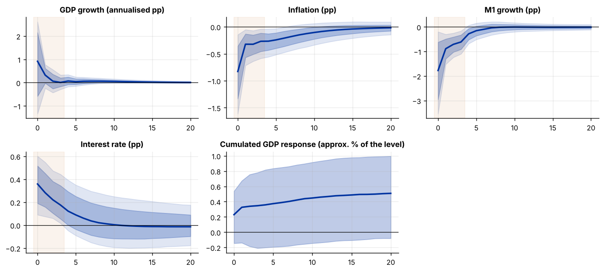

Run this model on your own data in Open Econometric Systems →
Step 1The question and the identification
What does a monetary policy tightening do to output? A recursive (Cholesky) VAR answers by assuming an ordering. Sign restrictions (Faust 1998; Canova and De Nicolò 2002; Uhlig 2005) use only the economic content that nearly all models share: after a contractionary monetary shock, the policy rate rises, inflation falls and money growth falls for some quarters. The response of output is left unrestricted, so the data tell us about it.
With a reduced-form VAR \(y_t=B(L)y_{t-1}+u_t,\ u_t\sim N(0,\Sigma)\), any structural impact matrix has the form \(A_0=PQ\), where \(P\) is the Cholesky factor of \(\Sigma\) and \(Q\) is an orthogonal matrix. The data pin down \(\Sigma\) but not \(Q\). The algorithm (Rubio-Ramírez, Waggoner and Zha 2010) is:
- draw \((B,\Sigma)\) from the posterior of the Bayesian VAR;
- draw \(Q\) uniformly from the orthogonal matrices (QR decomposition of a normal matrix);
- compute the impulse responses \(\Phi_h PQ\); keep the draw if the restrictions hold, otherwise redraw \(Q\);
- repeat, and summarise the retained responses.
| Restriction | Sign | Horizons |
|---|---|---|
| Interest rate | positive | quarters 0 to \(K-1\) |
| Inflation | negative | quarters 0 to \(K-1\) |
| M1 growth | negative | quarters 0 to \(K-1\) |
| GDP growth | unrestricted |
What sign restrictions can and cannot do
The retained draws are a set of models. The bands combine uncertainty about the data (the posterior of \(B,\Sigma\)) and uncertainty about which rotation is the true shock (which the data can never resolve). Because of that, the bands do not shrink as the sample grows, and the pointwise median of the draws is not the response of any single model (Fry and Pagan 2011). Report the restrictions, the acceptance rate and how much of the result comes from the restrictions rather than the data.
How to write it: identification
We identify a monetary policy shock in a Bayesian VAR with GDP growth, inflation, M1 growth and the three-month Treasury bill rate (four lags, 1959Q2–2009Q3) using sign restrictions: a contractionary shock raises the interest rate and lowers inflation and money growth for the first four quarters, and leaves the response of output unrestricted (Uhlig 2005). The prior is a natural-conjugate Minnesota-type prior with overall tightness 0.2. We draw 2,000 sets of reduced-form parameters from the posterior and, for each, search for rotations that satisfy the restrictions (Rubio-Ramírez, Waggoner and Zha 2010).
Step 2Load the data and estimate the Bayesian VAR
import warnings; warnings.filterwarnings("ignore")
import numpy as np, pandas as pd
import matplotlib.pyplot as plt
from scipy.linalg import cholesky
d = pd.read_csv("us_macro.csv").dropna().reset_index(drop=True)
names = ["gdp_growth", "inflation", "m1_growth", "tbilrate"]; Z = d[names].values; n = len(names); P = 4
print(f"{len(d)} quarters, {d.date.iloc[0]} to {d.date.iloc[-1]}; variables: {names}")
def design(Z, P):
Yd = Z[P:]; Xd = np.column_stack([Z[P - l:len(Z) - l] for l in range(1, P + 1)] + [np.ones(len(Z) - P)])
return Yd, Xd
def niw_posterior(Z, P, lam=.2, own=(0.0, .9, 0.0, .9)):
"""natural-conjugate Minnesota-type prior: B | Sigma ~ MN(B0, Sigma, Omega0), Sigma ~ IW(S0, nu0)."""
Yd, Xd = design(Z, P); T, k = Xd.shape
s2 = np.array([np.var(np.diff(Z[:, i])) if own[i] > .5 else np.var(Z[:, i]) for i in range(n)]) # scale of each variable
B0 = np.zeros((k, n)); B0[:n, :] = np.diag(own)
om = np.r_[[lam ** 2 / (l ** 2 * s2[j]) for l in range(1, P + 1) for j in range(n)], 1e4] # prior variance of each regressor (up to Sigma_ii)
Om0i = np.diag(1 / om); nu0 = n + 2; S0 = np.diag(s2) * (nu0 - n - 1)
Om1 = np.linalg.inv(Om0i + Xd.T @ Xd); B1 = Om1 @ (Om0i @ B0 + Xd.T @ Yd)
S1 = S0 + Yd.T @ Yd + B0.T @ Om0i @ B0 - B1.T @ np.linalg.inv(Om1) @ B1
return B1, Om1, (S1 + S1.T) / 2, nu0 + T
B1, Om1, S1, nu1 = niw_posterior(Z, P)
print(f"Posterior: {Om1.shape[0]} coefficients per equation, {nu1:.0f} degrees of freedom")
print("Posterior mean of the first own lag:", {names[i]: round(float(B1[i, i]), 2) for i in range(n)})
sig = S1 / (nu1 - n - 1); print("Posterior mean of the reduced-form residual standard deviations:", {k: round(float(v), 2) for k, v in zip(names, np.sqrt(np.diag(sig)))})202 quarters, 1959Q2 to 2009Q3; variables: ['gdp_growth', 'inflation', 'm1_growth', 'tbilrate']
Posterior: 17 coefficients per equation, 204 degrees of freedom
Posterior mean of the first own lag: {'gdp_growth': 0.21, 'inflation': 0.46, 'm1_growth': 0.29, 'tbilrate': 0.96}
Posterior mean of the reduced-form residual standard deviations: {'gdp_growth': 3.14, 'inflation': 2.31, 'm1_growth': 4.2, 'tbilrate': 0.81}How to read it
The data have 202 quarters and the posterior has 17 coefficients per equation (four lags of four variables plus a constant). The Minnesota prior shrinks the lags towards a random walk for inflation and the interest rate and towards zero for the growth rates, and the data move the own-lag coefficients to 0.21 (GDP growth), 0.46 (inflation), 0.29 (M1 growth) and 0.96 (interest rate). The interest rate is very persistent, which matters for how restrictions on its response are met.
Step 3Draw the structural models that satisfy the restrictions
from scipy.stats import invwishart
rng = np.random.default_rng(7)
H = 20
def companion_irfs(B, Pm, H):
"""matrices Phi_h (n x n) such that the response of y_{t+h} to a reduced-form shock u_t is Phi_h."""
A = [B[l * n:(l + 1) * n, :].T for l in range(P)]
Phi = [np.eye(n)]
for h in range(1, H + 1):
Phi.append(sum(A[l] @ Phi[h - 1 - l] for l in range(min(h, P))))
return np.array(Phi)
def haar(n, rng):
Qm, Rm = np.linalg.qr(rng.standard_normal((n, n))); return Qm * np.sign(np.diag(Rm))
def draw_set(Z, P, signs, K, ndraw=2000, tries=100, lam=.2, seed=7, shock_col=0):
rng = np.random.default_rng(seed); B1, Om1, S1, nu1 = niw_posterior(Z, P, lam)
keep, tried, nacc_par = [], 0, 0
L = np.linalg.cholesky(Om1)
for i in range(ndraw):
Sg = invwishart.rvs(df=nu1, scale=S1, random_state=rng)
Bd = B1 + L @ rng.standard_normal(B1.shape) @ np.linalg.cholesky(Sg).T
Pm = np.linalg.cholesky(Sg); Phi = companion_irfs(Bd, Pm, H)
for _ in range(tries):
tried += 1; q = haar(n, rng)[:, shock_col]
irf = np.array([Phi[h] @ Pm @ q for h in range(H + 1)]) # (H+1) x n response of each variable to the candidate shock
if irf[0, 3] < 0: irf, q = -irf, -q # normalise: the rate rises on impact
if all((irf[:K, j] * s > 0).all() for j, s in signs.items()):
keep.append(irf); nacc_par += 1; break
return np.array(keep), nacc_par / ndraw, len(keep) / tried
signs = {3: +1, 1: -1, 2: -1} # rate up, inflation down, M1 growth down
irfs, par_rate, rot_rate = draw_set(Z, P, signs, K=4)
print(f"Restrictions: rate up, inflation and M1 growth down for 4 quarters")
print(f"{len(irfs)} retained responses; share of posterior draws with at least one admissible rotation: {par_rate:.0%}; share of rotations accepted: {rot_rate:.1%}")
print("Impact response (one s.d. shock), median:", {k: round(float(v), 2) for k, v in zip(names, np.median(irfs[:, 0, :], 0))})Restrictions: rate up, inflation and M1 growth down for 4 quarters
1997 retained responses; share of posterior draws with at least one admissible rotation: 100%; share of rotations accepted: 8.6%
Impact response (one s.d. shock), median: {'gdp_growth': 0.92, 'inflation': -0.83, 'm1_growth': -1.77, 'tbilrate': 0.36}How to read it
About 8.6% of the rotations satisfy the three restrictions for four quarters, and every posterior draw has at least one admissible rotation, so the restrictions are not contradicted by the data. We retain 1,997 responses. The median impact response to a one-standard-deviation shock is +0.36 points for the interest rate, −0.83 for inflation and −1.77 for M1 growth, which is the intended contractionary shock, but the median impact response of GDP growth is +0.92, which is the opposite of what a tightening is expected to do.
Step 4Impulse responses
med = np.median(irfs, 0); lo, hi = np.percentile(irfs, [16, 84], 0); lo9, hi9 = np.percentile(irfs, [5, 95], 0)
cum = np.cumsum(irfs[:, :, 0], 1) / 4 # cumulated GDP growth: approximate percent response of the level
fig, ax = plt.subplots(2, 3, figsize=(11, 5))
for a, j, ttl in zip(ax.ravel()[:4], range(4), ["GDP growth (annualised pp)", "Inflation (pp)", "M1 growth (pp)", "Interest rate (pp)"]):
a.fill_between(range(H + 1), lo9[:, j], hi9[:, j], color="#0033a0", alpha=.12); a.fill_between(range(H + 1), lo[:, j], hi[:, j], color="#0033a0", alpha=.25)
a.plot(med[:, j], color="#0033a0", lw=2); a.axhline(0, color="#000", lw=.7); a.axvspan(-.5, 3.5, color="#c46000", alpha=.07); a.set_title(ttl)
a = ax.ravel()[4]; a.fill_between(range(H + 1), *np.percentile(cum, [16, 84], 0), color="#0033a0", alpha=.25); a.plot(np.median(cum, 0), color="#0033a0", lw=2); a.axhline(0, color="#000", lw=.7); a.set_title("Cumulated GDP response (approx. % of the level)")
ax.ravel()[5].axis("off"); plt.tight_layout()
print("Median GDP growth response, quarters 0-8:", np.round(med[:9, 0], 2))
print("68% band at quarter 4:", np.round([lo[4, 0], hi[4, 0]], 2), "| 90% band:", np.round([lo9[4, 0], hi9[4, 0]], 2))
print(f"Cumulated GDP response after 8 quarters: median {np.median(cum[:, 8]):.2f}%, 68% band [{np.percentile(cum[:, 8], 16):.2f}, {np.percentile(cum[:, 8], 84):.2f}]")
print(f"Share of retained draws with a negative GDP growth response at quarter 2: {(irfs[:, 2, 0] < 0).mean():.0%}; at quarter 4: {(irfs[:, 4, 0] < 0).mean():.0%}; cumulated response negative after 8 quarters: {(cum[:, 8] < 0).mean():.0%}")Median GDP growth response, quarters 0-8: [0.92 0.32 0.06 0.01 0.07 0.04 0.06 0.06 0.06] 68% band at quarter 4: [-0.08 0.24] | 90% band: [-0.17 0.34] Cumulated GDP response after 8 quarters: median 0.42%, 68% band [-0.17, 0.88] Share of retained draws with a negative GDP growth response at quarter 2: 42%; at quarter 4: 33%; cumulated response negative after 8 quarters: 24%

How to read it
Output growth is not credibly lower after the shock. Its median response is positive on impact (0.92) and about zero afterwards; the 68% band at quarter 4 is [−0.08, 0.24] and the 90% band [−0.17, 0.34]. Cumulated over eight quarters, the median is +0.42% with a 68% band of [−0.17, 0.88], and 24% of the retained draws have a negative cumulated response. So the data and these restrictions do not support the view that a monetary tightening lowers output; they are also not able to rule it out. This resembles Uhlig's (2005) conclusion that the output response is ambiguous.
Step 5How informative are the restrictions?
# Compare with the response one would get with NO sign restrictions on any of the four variables except the interest rate rising on impact,
# and with each restriction added in turn.
rows = []
for lab, sg in [("rate up only", {3: +1}), ("+ inflation down", {3: +1, 1: -1}), ("+ M1 growth down (baseline)", {3: +1, 1: -1, 2: -1})]:
ir, pr, rr = draw_set(Z, P, sg, K=4, ndraw=1000, seed=3)
c_ = np.cumsum(ir[:, :, 0], 1) / 4
rows.append((lab, len(ir), rr, np.median(c_[:, 8]), np.percentile(c_[:, 8], 16), np.percentile(c_[:, 8], 84), (c_[:, 8] < 0).mean()))
print(pd.DataFrame(rows, columns=["restrictions", "retained", "acceptance", "median cumulated GDP, 8q", "16%", "84%", "P(negative)"]).round(3).to_string(index=False))
# the width of the bands attributable to the rotation: fix the reduced form at the posterior mean and vary only Q
Bm, _, Sm, nm = niw_posterior(Z, P); Sg = Sm / (nm - n - 1); Pm = np.linalg.cholesky(Sg); Phi = companion_irfs(Bm, Pm, H)
rr_ = np.random.default_rng(1); only_q = []
while len(only_q) < 500:
q = haar(n, rr_)[:, 0]; ir = np.array([Phi[h] @ Pm @ q for h in range(H + 1)])
if ir[0, 3] < 0: ir = -ir
if all((ir[:4, j] * s > 0).all() for j, s in signs.items()): only_q.append(ir)
only_q = np.array(only_q); cq = np.cumsum(only_q[:, :, 0], 1) / 4
print(f"\nCumulated GDP response after 8 quarters, 68% band: varying the rotation only (reduced form fixed): [{np.percentile(cq[:, 8], 16):.2f}, {np.percentile(cq[:, 8], 84):.2f}]; full posterior: [{np.percentile(cum[:, 8], 16):.2f}, {np.percentile(cum[:, 8], 84):.2f}]") restrictions retained acceptance median cumulated GDP, 8q 16% 84% P(negative)
rate up only 1000 0.838 0.056 -0.594 0.735 0.472
+ inflation down 1000 0.147 0.400 -0.195 0.872 0.253
+ M1 growth down (baseline) 997 0.088 0.453 -0.147 0.902 0.223
Cumulated GDP response after 8 quarters, 68% band: varying the rotation only (reduced form fixed): [-0.14, 0.85]; full posterior: [-0.17, 0.88]How to read it
Most of the answer comes from the restrictions. With only the rate rising on impact, the median cumulated GDP response is +0.06% and the probability that it is negative is 0.47, so the data are neutral. Adding the inflation restriction moves it to +0.40% (P(negative) = 0.25) and adding M1 growth to +0.45% (0.22). The shocks that lower inflation and money growth while raising the rate are also shocks that lift output, so the identified 'monetary shock' probably mixes in other disturbances (such as supply or money-demand shocks). Holding the reduced form fixed barely narrows the band ([−0.14, 0.85] against [−0.17, 0.88] in the full posterior): almost all of the width is uncertainty about the rotation, not about the parameters, and it will not shrink with more data.
Step 6Forecast error variance and the role of the shock
# approximate share of the forecast-error variance due to the monetary shock: squared responses of each retained draw over the total variance at the posterior-mean reduced form
Bm, _, Sm, nm = niw_posterior(Z, P); Sg = Sm / (nm - n - 1); Pm = np.linalg.cholesky(Sg); Phi = companion_irfs(Bm, Pm, 24)
tot = sum(np.diag(Phi[h] @ Sg @ Phi[h].T) for h in range(9)) # total forecast error variance over h = 0..8 (cumulated), per variable
shares = np.array([(irfs[k, :9, :] ** 2).sum(0) / tot for k in range(len(irfs))])
print("Share of the (cumulated, 0 to 8 quarter) forecast-error variance explained by the monetary shock, median and 68% band:")
print(pd.DataFrame({"median": np.median(shares, 0), "16%": np.percentile(shares, 16, 0), "84%": np.percentile(shares, 84, 0)}, index=names).round(2).to_string())Share of the (cumulated, 0 to 8 quarter) forecast-error variance explained by the monetary shock, median and 68% band:
median 16% 84%
gdp_growth 0.15 0.03 0.46
inflation 0.13 0.05 0.31
m1_growth 0.23 0.06 0.53
tbilrate 0.08 0.03 0.20How to read it
The identified shock explains a modest share of the variation in the first two years (using the posterior-mean reduced form for the denominator): median 0.15 for GDP growth, 0.13 for inflation, 0.23 for M1 growth and 0.08 for the rate. The bands are wide (for GDP growth, 0.03 to 0.46), which is another sign that the restrictions leave much of the shock's importance unidentified.
Step 7Robustness: the restriction horizon, the prior and the lag length
rows = []
for lab, kw in [("K = 1 quarter", dict(K=1)), ("K = 2", dict(K=2)), ("K = 4 (baseline)", dict(K=4)), ("K = 6", dict(K=6)),
("K = 4, tighter prior (0.1)", dict(K=4, lam=.1)), ("K = 4, looser prior (0.5)", dict(K=4, lam=.5))]:
ir, pr, rr = draw_set(Z, P, signs, ndraw=800, seed=5, **kw)
c_ = np.cumsum(ir[:, :, 0], 1) / 4
rows.append((lab, len(ir), rr, np.median(c_[:, 8]), np.percentile(c_[:, 8], 16), np.percentile(c_[:, 8], 84), (c_[:, 8] < 0).mean()))
print(pd.DataFrame(rows, columns=["specification", "retained", "acceptance", "median cumulated GDP, 8q", "16%", "84%", "P(negative)"]).round(3).to_string(index=False))
P_save = P; rows = []
for p_ in [2, 6]:
P = p_; ir, pr, rr = draw_set(Z, p_, signs, K=4, ndraw=800, seed=5); c_ = np.cumsum(ir[:, :, 0], 1) / 4
rows.append((f"{p_} lags", len(ir), rr, np.median(c_[:, 8]), np.percentile(c_[:, 8], 16), np.percentile(c_[:, 8], 84), (c_[:, 8] < 0).mean()))
P = P_save
print(pd.DataFrame(rows, columns=["specification", "retained", "acceptance", "median cumulated GDP, 8q", "16%", "84%", "P(negative)"]).round(3).to_string(index=False)) specification retained acceptance median cumulated GDP, 8q 16% 84% P(negative)
K = 1 quarter 800 0.215 0.258 -0.437 0.836 0.355
K = 2 800 0.147 0.311 -0.352 0.885 0.324
K = 4 (baseline) 799 0.088 0.404 -0.217 0.925 0.257
K = 6 722 0.033 0.493 -0.128 0.945 0.209
K = 4, tighter prior (0.1) 799 0.105 0.307 -0.188 0.787 0.262
K = 4, looser prior (0.5) 779 0.048 0.515 0.002 0.973 0.158
specification retained acceptance median cumulated GDP, 8q 16% 84% P(negative)
2 lags 800 0.090 0.408 -0.221 0.906 0.260
6 lags 800 0.089 0.358 -0.228 0.825 0.285How to read it
Lengthening the restriction horizon from one to six quarters lowers the acceptance rate (from 21.5% to 3.3%) and raises the median cumulated GDP response from 0.26% to 0.49%, with P(negative) falling from 0.36 to 0.21; so longer restrictions push the results further away from a negative output response. A looser prior (0.5) lowers the acceptance rate to 4.8% and gives 0.52% with a 68% band of [0.00, 0.97]; a tighter prior (0.1) gives 0.31%. The lag length matters less (0.41% with two lags, 0.36% with six). The conclusion that output is not credibly negative holds throughout, but the size of the positive median depends on the restrictions.
How to write it: results
A contractionary monetary shock identified with sign restrictions (interest rate up, inflation and M1 growth down for four quarters) lowers inflation by 0.8 points on impact and M1 growth by 1.8 points, but does not lower output: the median cumulated GDP response after eight quarters is +0.42% (68% credible set −0.17 to 0.88%), and 24% of the retained draws have a negative response. The result is not driven by a single restriction or by the prior, but it is sensitive to them: with only the interest-rate restriction the probability of a fall in output is 0.47, and with longer restrictions it falls to 0.21. The bands reflect uncertainty about the rotation more than about the reduced-form parameters (with the parameters fixed, the band is [−0.14, 0.85]) and will not shrink as the sample grows. We therefore interpret the output response as ambiguous, and as a sign that the restrictions identify a mixture of monetary and other shocks.
Step 8What to report in the paper
| Item | What to show |
|---|---|
| Restrictions | which variables, signs and horizons, with the economic argument for each |
| Algorithm | the prior, the number of posterior draws, the rotation search, the acceptance rate |
| Responses | median and credible sets, with the caveat that they pool two kinds of uncertainty |
| Informativeness | how much of the answer comes from the restrictions (bands with the reduced form fixed, restrictions added in turn) |
| Robustness | restriction horizon, prior tightness, lag length, variables in the system |
Common mistakes
- Reading the median as a structural model. The pointwise median across draws mixes different models (Fry and Pagan 2011). Say it is a summary of a set.
- Leaving the interesting variable unrestricted and then claiming the data found the result. If output falls only because of the sign on money growth and the rate, say that.
- Ignoring the prior. With a flat prior over rotations, the prior on the impulse responses is not flat and can drive the tails (Baumeister and Hamilton 2015).
- Too many or too few restrictions. Too few leaves the set so wide that the bands are uninformative. Too many may be contradicted by the data (very low acceptance).
- Posterior bands that do not shrink with more data. That is expected for set-identified models.
- Forgetting to normalise. Fix the size and sign of the shock (here: the rate rises on impact) before comparing across specifications.